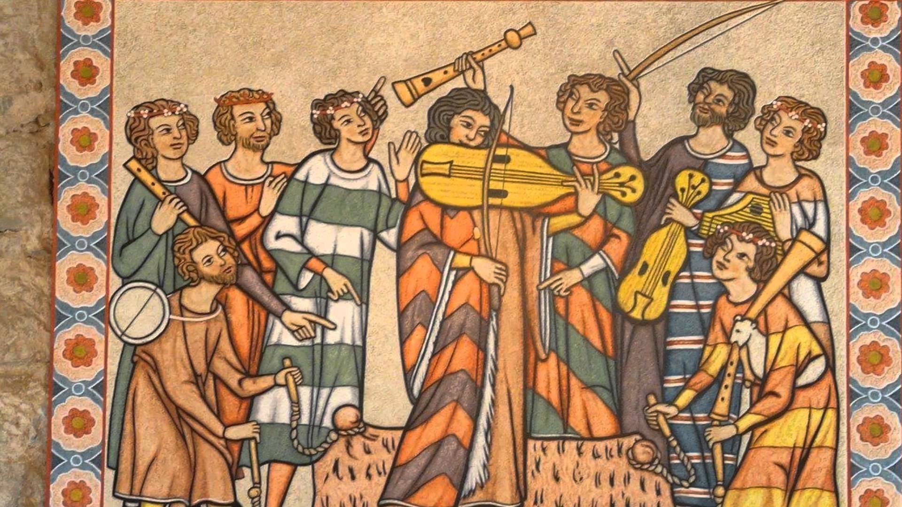
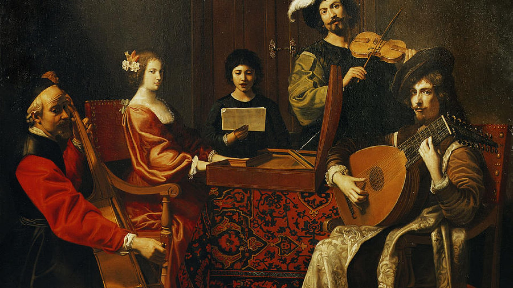
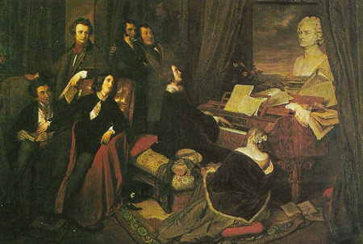
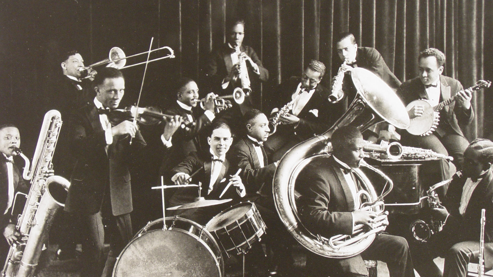

General Defenition
Music is an art form, and cultural activity, whose medium is sound. General definitions of music include common elements such as pitch (which governs melody and harmony), rhythm (and its associated concepts tempo, meter, and articulation), dynamics (loudness and softness), and the sonic qualities of timbre and texture (which are sometimes termed the "color" of a musical sound). Different styles or types of music may emphasize, de-emphasize or omit some of these elements. Music is performed with a vast range of instruments and vocal techniques ranging from singing to rapping; there are solely instrumental pieces, solely vocal pieces (such as songs without instrumental accompaniment) and pieces that combine singing and instruments. The word derives from Greek μουσική (mousike; "art of the Muses").
Origin and History of Music
There are numerous theories regarding when and where music originated. Though, many historians think that music existed before man existed. That animal took part in music. Even so, historiographers point out that there are six periods of music and each period has a particular style that significantly contributed to what music is today.
Medieval / Middle Ages
The Middle Ages, which encompasses the 6th-century to the 16th-century, featured medieval music. During this time, there were two general types of music styles; the monophonic and the polyphonic. The main forms of music included Gregorian chanting and plainchant. Plainchant is a form of church music that has no instrumental accompaniment and only involves chanting or singing. For a period, it was the only type of music allowed in Christian churches. Around the 14th-century, secular music became increasingly prominent, setting the stage for the music period known as the Renaissance.
Example: ("Cobblestone Village")
Renaissance
Renaissance means "rebirth." In context to music, by the 16th-century, the Church's hold of the arts weakened. Thus, composers during the Renaissance period were able to bring about many changes in the way music was created and perceived. For example, musicians experimented with cantus firmus, began using instrumentals more and created more elaborate music forms that included up to 6 voice parts.

Example: ("Tourdion")
Baroque
The word "baroque" comes from the Italian word "barocco" which means bizarre. The Baroque period was a time when composers experimented with form, musical contrasts, styles and instruments. This period saw the development of opera, instrumental music as well as other Baroque music forms and styles. Music became homophonic, meaning a melody would be supported by a harmony. Prominent instruments featured in Baroque period compositions included the violin, viola, double bass, harp, and oboe. The Baroque period in music history refers to the styles of the 17th and 18th-centuries. The High Baroque period lasted from 1700 to 1750, during which Italian opera was more dramatic and expansive.
Example: ("Nisi Dominus - Cum Dederit" by Antonio Vivaldi)
Classical
The music forms and styles of the Classical period, which spans from 1750 to 1820, is characterized by simpler melodies and forms such as the sonatas. During this time, the middle class had more access to music, not just the highly educated aristocrats. To reflect this shift, composers wanted to create music that was less complicated and easier to understand. The piano was undoubtedly the primary instrument used by composers during the Classical period. Most notably, Mozart wrote his first symphony and Beethoven was born during this period.

Example: ("Symphony no.9" by Beethoven)
Romantic
Historiographers define the Romantic Music period to be between 1800 to 1900. Music forms of the Romantic period used music to tell a story or express an idea and the expanded on the use of various instruments including wind instruments. Instruments that were invented or improved upon during this time included the flute and the saxophone. Melodies became fuller and more dramatic as Romantics believed in allowing their imagination and intense emotion to soar through their works. By the mid-19th-century, folk music became popular among the Romantics, and more emphasis was put on nationalist themes.
Example: ("Moonlight Sonata" by Beethoven)
20th-Century
Music during the 20th-century brought about many innovations on how music was performed and appreciated. Artists were more willing to experiment with new music forms and used technology to enhance their compositions. Early electronic instruments included the dynamophone, Theremin, and Ondes-Martnot. 20th-century music styles included impressionistic, 12-tone system, neoclassical, jazz, concert music, serialism, chance music, electronic music, new Romanticism, and minimalism.
